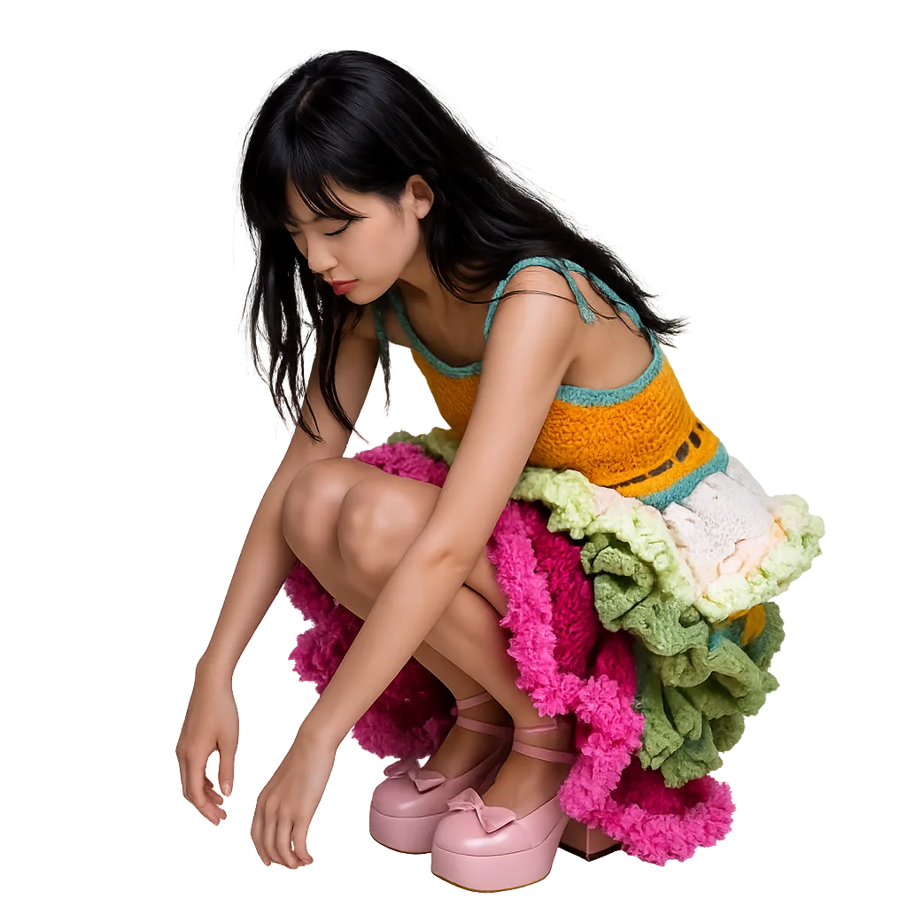

persona
~/anna/research/personaresearch notebook: algorithmic persona
An ongoing notebook on persona theory, from the mask to the platform: how people perform a public self online, and how algorithms and AI now co-author that self. Each card is a source; the pencil threads show who builds on whom.
// ongoing · sources

♪♫♪Columns are fields, rows are eras. Click a card to open its notebook page; click a field name to open that branch of the research.
swipe sideways to see all fields →
builds on
★ landmark
? details still to verify
Every source in the notebook. Search, filter by field, and copy citations (APA 7).